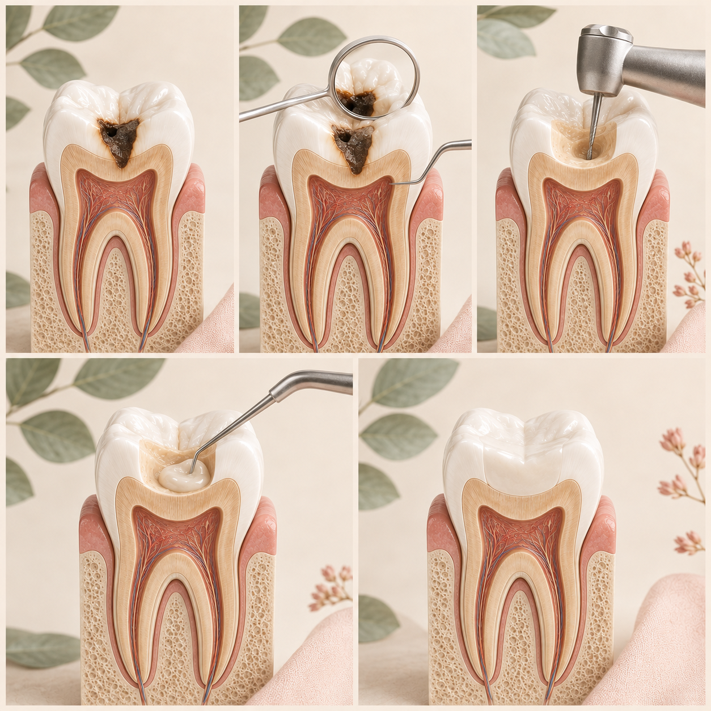

A dental filling is one of the most common treatments used to restore a tooth affected by decay or certain types of damage. Here's what it actually does, why it may be needed and what you can expect during the procedure.

A dental filling is a restorative treatment used to repair a tooth that has been damaged by decay or, in some cases, other forms of minor tooth damage.
The dentist removes the damaged portion of the tooth, cleans the area and then fills the space with a suitable restorative material.
The aim is to restore the tooth's shape and function while helping prevent the cavity from progressing further.
The most common reason for a filling is dental caries, commonly called a cavity.
When decay creates a cavity in the tooth, simply brushing cannot repair the lost tooth structure. The damaged portion may need to be removed and restored.
The exact treatment depends on how extensive the damage is and how much healthy tooth structure remains.
A filling replaces the portion of tooth structure that has been lost. This is why identifying and treating decay early can help preserve more of the natural tooth.
Your dentist examines the tooth and determines the extent and location of the problem.
If needed, local anaesthesia is used to numb the area and make the procedure more comfortable.
The dentist removes the decayed or damaged portion of the tooth and cleans the area.
A restorative material is placed into the prepared area and shaped to restore the tooth.
Your dentist checks the bite and makes any necessary adjustments so the restored tooth functions comfortably.
With appropriate local anaesthesia, the filling procedure itself is generally intended to be comfortable.
You may feel pressure, vibration or movement during the procedure, but you should not be expected to tolerate significant pain.
If you feel discomfort during treatment, tell your dentist. Additional anaesthesia can often be given when appropriate.
Some people experience temporary sensitivity after a filling. This can depend on the depth and location of the restoration and the individual tooth.
Your dentist may give you specific instructions depending on the material used and the condition of the tooth.
If sensitivity is severe, persistent or worsening, the tooth should be reviewed by a dentist.
Fillings can occasionally become damaged, worn or dislodged. If this happens, the tooth should be assessed by a dentist.
Yes. The tooth can still develop decay around a restoration or on another part of the tooth. Good oral hygiene and regular dental examinations remain important.
Not necessarily. The appropriate management depends on factors such as the stage and extent of the lesion. Your dentist can determine the most suitable approach after examining the tooth.
If a tooth has extensive damage or the pulp inside the tooth is significantly affected, a different treatment may be required. The appropriate treatment depends on the individual tooth.
If you notice a cavity, sensitivity, food getting stuck, pain or a change in a tooth, don't rely only on symptoms to decide whether treatment is needed. A dental examination can help determine what is actually happening.
If you have a question about fillings or another dental treatment, you can submit your question through the website.
Ask Dr. Anushka →The information on this page is for general educational purposes only and does not replace an in-person dental examination, diagnosis or personalised professional advice.